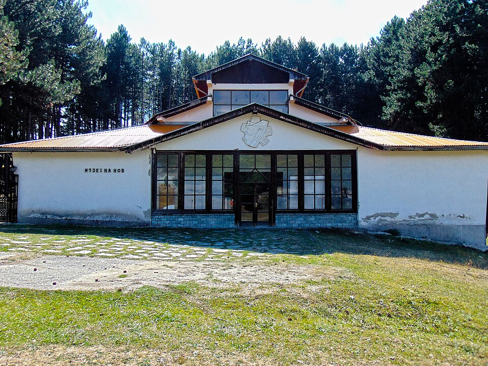
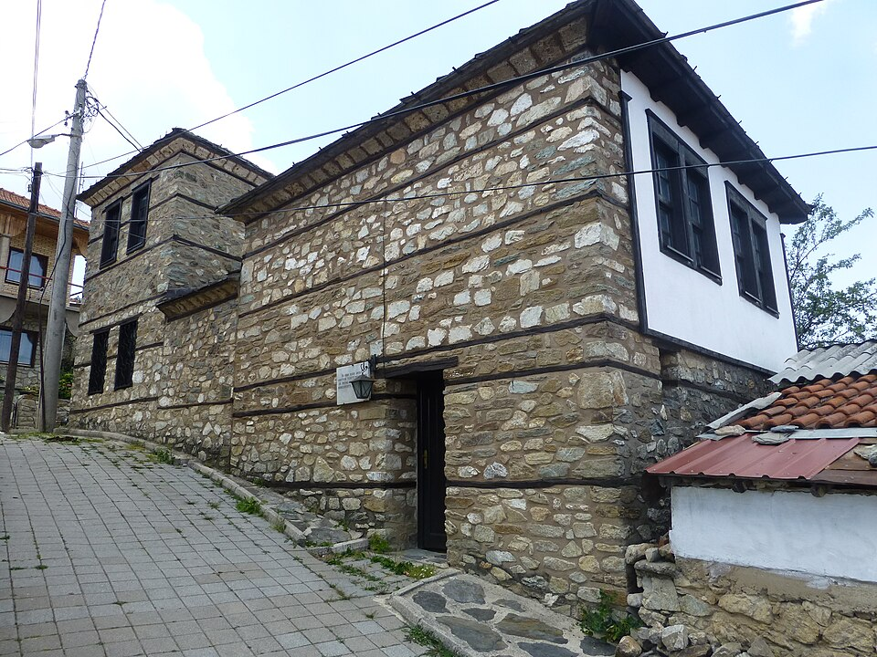
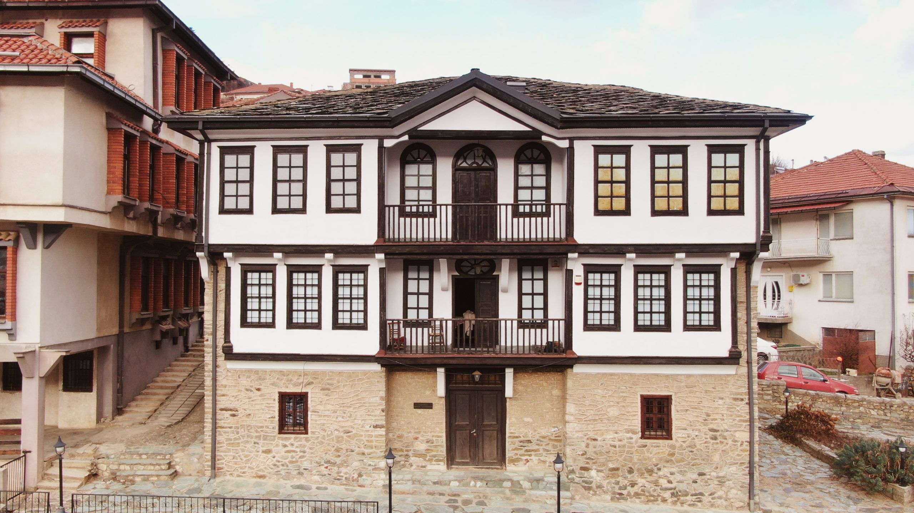
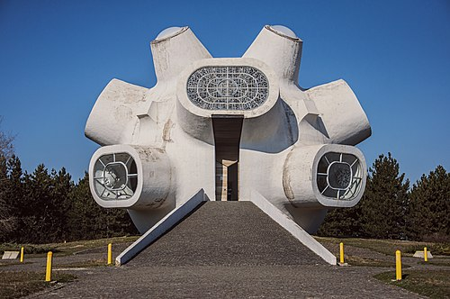
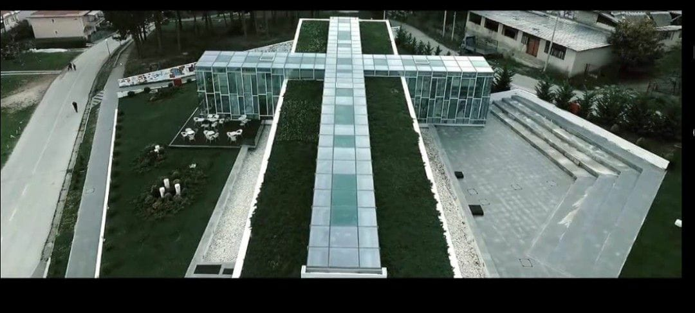
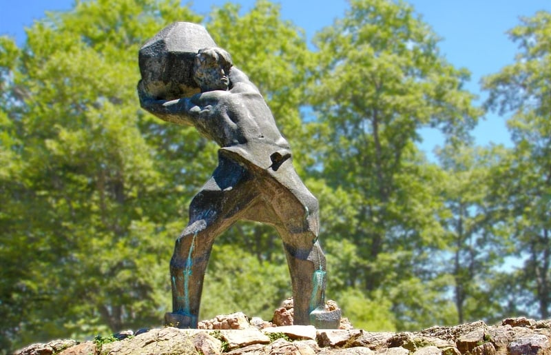
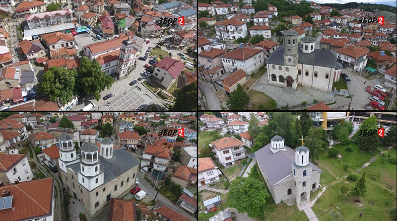

Неколку места што мора да ги посетите кога ќе дојдете во Крушево
1. Музеј на Илинденското востание
Сместен е во староградска куќа од 19 век, во која е прогласена Крушевската Република во 1903 г.
Хронолошки, во музејот се изложени највредните документи од настанокот на градот и неговиот бунтовен дух,
подготовките и текот на Илинденското востание против Турската империја (оригинални експонати на оружје, слики, карти и сл.),
прогласувањето на Републиката, членовите на привремената влада, Советот, Претседателот на Крушевската Република, борбите за нејзина одбрана,
последиците од задушувањето на востанието и пропаѓање на Републиката.
2. Музеј на НОБ

Отворен е во 1989 г. Во него се сместени експонати кои потсетуваат
на Народноослободителната борба од 1941 - 1945 г. Почнувајќи од револуционерните
традиции за време на Илинденското востание и Крушевската Република, во музејот преку
бројни фотографии е проследен револуционерниот пат на крушевскиот партизански одред "Питу Гули" за
време на војната, како и бројни оригинални оружја и предмети на партизаните од овој одред
кои даваат автентичност на овој период. Во музејот доминира и огромна фреска, дело на големиот мајстор сликарот Борко Лазески
кој го отсликува текот на војната.
3. Леарница

Леарницата за куршуми за време на Илинденското востание како поставка постои од 2003 година. Во неа
се наоѓаат оригиналните орудија кои се користеле за лиење на куршуми за потребите на востаниците во
текот на Илинденското востание како и голема колекција на автентично оружје користено во Илинденското востание.
4. Галерија Никола Мартиноски

Никола Мартиноски (1903 - 1973), роден во Крушево, е еден од најпознатите македонски сликари од првата генерација.
Споменот за Мартиноски е зачуван во традиционална куќа/галерија која што содржи огромна колекција од сликите и
цртежите на Мартиноски, како и различни етнолошки артефакти.
5. Споменик Македониум

Споменикот "Македониум" е создаден од страна на Јордан и Искра Грабулоски и ја означува непокорноста, борбата
и вечната стремеж на македонскиот народ за слобода и самостојна држава.Споменикот Илинден се протега на 12 хектари
и формата започнува со раскинати пранги продолжува преку криптата и колоритно – мозаичната керамопластична сцената,
па завршува со купола извишена 1320 метри надморска височина, од каде се протега инзвореден поглед кон градот Крушево.
Внатрешноста на куполата импресионира со своите релјефи, витражите со вечниот пламен и звуците на ораториумот „Сонце на прастарата земја“
од Тома Прошев. Денес во самата купола се наоѓа гробот на Никола Карев и споменица и биста на Тоше Проески.
6. Спомен куќа Тодор Проески

Спомен куќата на Тодор Проески претставува материјализација на целиот животен пат на Тоше Проески и низ своите содржини
обезбедува хронолошки приказ на неговото детство, тинејџерските години и периодот кога Тоше го достигнува врвот на својата
уметничка кариера. Куќата е поделена на неколку делови: животен пат, музичка кариера, секојдневие, Тоше како хуманист,
Тоше и фановите како и Тоше засекогаш. Спомен куќата е прогласена за најдобро архитектонско дело за 2011 година.
7. Мечкин Камен

На оддалеченост од неколку километри од градот се наоѓа историскиот локалитет Мечкин Камен, каде илинденските
востаници водеа одлучна борба против Отоманскиот аскер. На ова место четата на Питу Гули го бранела Крушево од
нападот на турските трупи кои доаѓале од Битола. Целата чета и нивниот војвода загинале, а Крушево и околните села биле
опожарени од Османлиите.
8. Цркви

Црквата Свети Никола е изградена во 1832 г. За време на Илинденското востание е запалена од страна на турците
и е изгорена до темели. Во периодот од 1905 до 1907 г. е возобновена и постои и ден денес. По својата архитектонска форма
црквата е трикорабна градба со правоаголна основа. Иконите во црквата ги изработил зографот Михаил со синовите Данаил и Никола,
а иконостасот бил дело на познатите копаничари Петре Филиповски-Гарката и Димитар Станишев. Најстарите икони изложени во оваа црква датираат од 1884 г.
Црквата „Св. Јован Крстител ― македонска православна црква која се наоѓа во Крушево, Македонија. Оваа црква е позната и како Влашка црква.
Градбата е една од најзачуваните во градот. Нејзиниот иконостас е заведен како Културно наследство на Македонија. Преовладува прекрасно изработен дрвен иконостас,
направен од плитка резба од браќата Несторови, чија изработка траела околу четири години.
Црквата Успение на Пресвета Богородица е изградена во 1867 г. Во внатрешноста на црквата доминира голем монументален иконостас, работен во 19 век и на него се наоѓаат
евидентирани икони од истиот период. Во внатрешноста на црквата има прекрасен фреско-живопис во калотата и во тамбурата на средишниот дел од црквата, како и во слепата
калота на западната страна. Фреско-живописот над порталот датира од 1870 година.
Црквата Светa Троица се наоѓа во Крушево. Христијанскиот храм бил изграден во 1881 година. Црквата се наоѓа во близина на хотелот Монтана. Во времето на Илиндеското востание била опожарена,
но набрзо потоа повторно била обновена.
 Сместен е во староградска куќа од 19 век, во која е прогласена Крушевската Република во 1903 г.
Хронолошки, во музејот се изложени највредните документи од настанокот на градот и неговиот бунтовен дух,
подготовките и текот на Илинденското востание против Турската империја (оригинални експонати на оружје, слики, карти и сл.),
прогласувањето на Републиката, членовите на привремената влада, Советот, Претседателот на Крушевската Република, борбите за нејзина одбрана,
последиците од задушувањето на востанието и пропаѓање на Републиката.
Сместен е во староградска куќа од 19 век, во која е прогласена Крушевската Република во 1903 г.
Хронолошки, во музејот се изложени највредните документи од настанокот на градот и неговиот бунтовен дух,
подготовките и текот на Илинденското востание против Турската империја (оригинални експонати на оружје, слики, карти и сл.),
прогласувањето на Републиката, членовите на привремената влада, Советот, Претседателот на Крушевската Република, борбите за нејзина одбрана,
последиците од задушувањето на востанието и пропаѓање на Републиката.